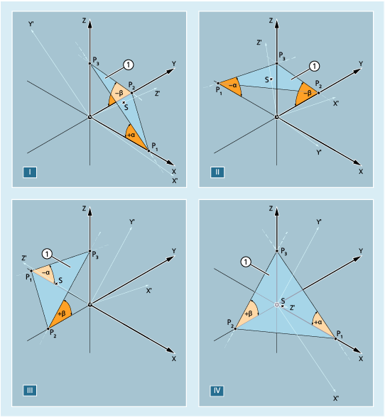

Im folgenden Bild sind die Raumwinkel für eine beispielhafte Ebene in den Quadranten I bis IV aufgezeigt. Die schräge Ebene definiert die Ausrichtung der Arbeitsebene (hier: G17) durch Drehungen des Werkstückkoordinatensystems. Die Vorzeichen der Raumwinkel geben die Richtung an, um die das Koordinatensystem um die jeweilige Achse gedreht wird:
① | Schräge Ebene als Vorgabe für die neue G17-Ebene |
α, β | Raumwinkel der schrägen Ebene |
I ... IV | Quadrant 1 bis 4 |
P1, P2, P3 | Schnittpunkte der schrägen Ebene mit den Koordinatenachsen des noch nicht gedrehten WKS |
S | Schnittpunkt zwischen der schrägen Ebene und der nach den Drehungen darauf senkrecht stehenden Z'-Achse |
Zur Ausrichtung der G17-Ebene auf die schräge Ebene wird das WKS wie folgt gedreht: | ||
| Drehung um die y-Achse um den vorzeichenbehafteten Winkel α | |
⇒ | X'-Achse ist parallel zur Schnittgeraden der X-Y-Ebene mit der schrägen Ebene ausgerichtet | |
| Drehung um X'-Achse um den vorzeichenbehafteten Winkel β | |
⇒ | Y'-Achse ist parallel zur Schnittgeraden der X-Y-Ebene mit der schrägen Ebene ausgerichtet | |
⇒ | Z'-Achse steht senkrecht auf der schrägen Ebene | |
⇒ | G17' liegt parallel zur schrägen Ebene | |
Die entsprechende Programmierung lautet pro Quadrant: | |
|
|
|
|
|
|
|
|
Mit der Angabe der Raumwinkel ist die Orientierung des zweidimensionalen Koordinatensystems innerhalb der Ebene (d. h., der Drehwinkel um den Flächennormalenvektor) nicht definiert. Die Lage des Koordinatensystems wird deshalb so festgelegt, dass die gedrehte erste Achse in der Ebene liegt, die von der ersten und dritten Achse des nicht gedrehten Koordinatensystems aufgespannt wird.
Das bedeutet:
Bei Programmierung von X und Y liegt die neue X-Achse in der ursprünglichen Z-X-Ebene.
Bei Programmierung von Z und X liegt die neue Z-Achse in der ursprünglichen Y-Z-Ebene.
Bei Programmierung von Y und Z liegt die neue Y-Achse in der ursprünglichen X-Y-Ebene.
Wird eine von dieser Voreinstellung abweichende Lage des Koordinatensystems benötigt, muss eine zusätzliche Drehung mit AROT... ausgeführt werden.